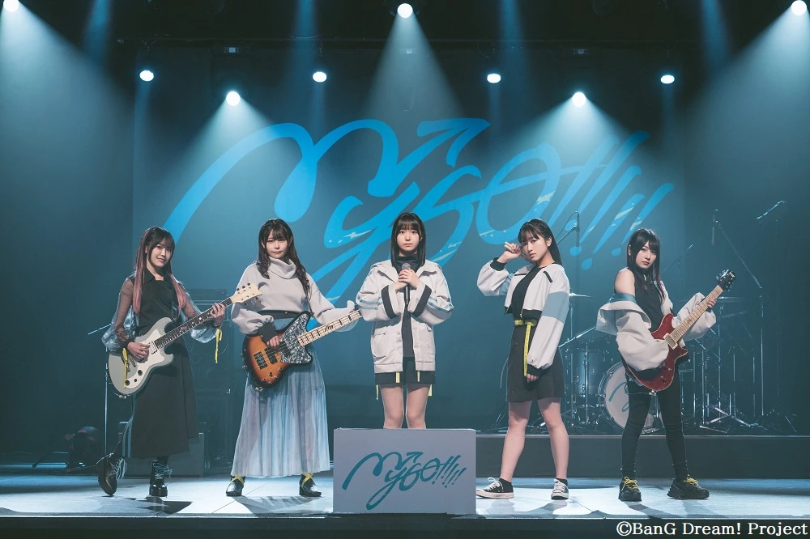

Character and the real life band of MyGo!!!!!.
A first-year high school student known as "Haneoka's Weirdo Girl" due to her peculiar personality of collecting all sorts of just-the-right-size things.
Character and the real life band of MyGo!!!!!.